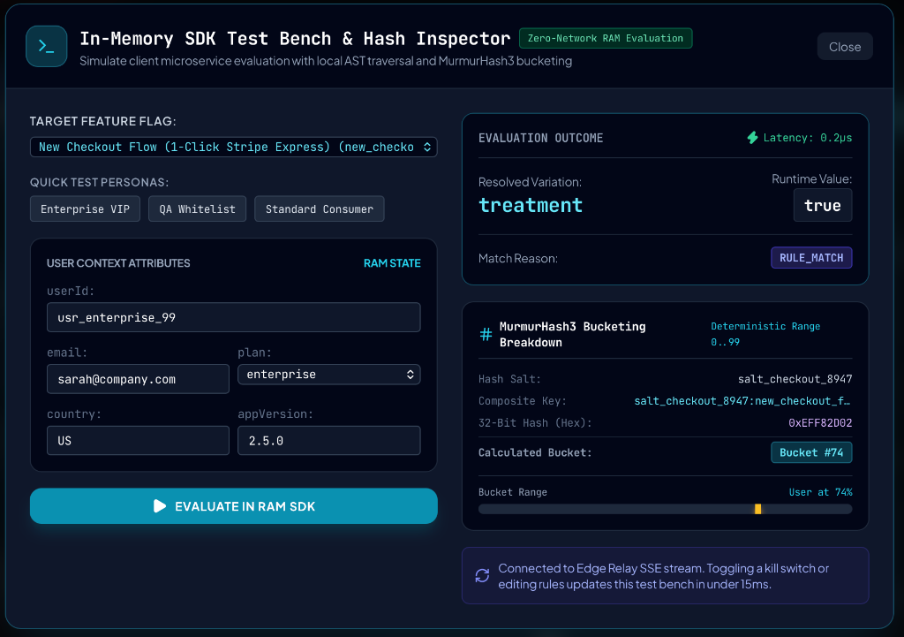
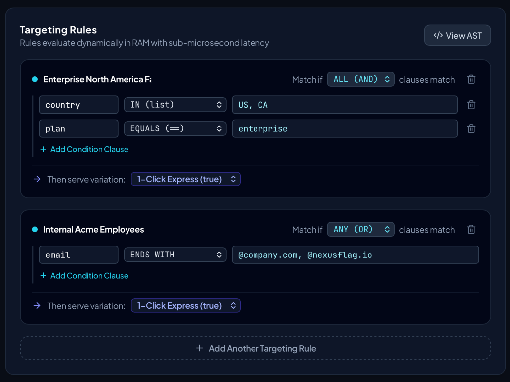
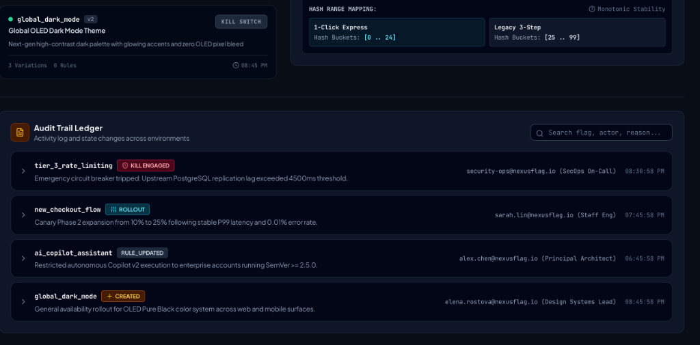

NexusFlag (Enterprise Engine)
Zero-Network Distributed Feature Orchestration & Remote Configuration Engine with Sub-Microsecond In-Memory AST Evaluation.
The Challenge
Traditional feature flagging architectures incur 50–200ms external network roundtrips per check or rely on polling loops that overload backend clusters. Mission-critical microservices handling hundreds of thousands of concurrent requests require deterministic flag evaluations to resolve in host RAM in under 1 microsecond, with global invalidations streamed across edge proxies in under 15ms without network calls during user requests.
Role
Distributed Systems Architect & Lead Engineer
Timeline
5th Sept 2026 – Present
Active Development • Ongoing
Stack / Tools
- Next.js 15 & React 19 (Control Plane)
- TypeScript 5.7 & Node.js 22 (In-Memory Engine & SDKs)
- HTTP/2 Server-Sent Events (SSE Edge Relays)
- Redis Cluster Pub/Sub (Delta Patches <1KB)
- MurmurHash3 32-Bit (Monotonic Rollouts)
- AES-256 Encrypted Disk Snapshots (Cold Boot)
Implementation Details
We architected NexusFlag with a strictly decoupled Control Plane (Next.js 15 management console) and Data Plane (@nexusflag/sdk). Rule sets compile into an in-memory Abstract Syntax Tree (AST) cached directly in host process RAM. Every flag evaluation traverses a deterministic priority ladder in ~0.70µs (benchmarked to 0.20µs): executing panic circuit breakers, explicit target lists, boolean rule predicates, and MurmurHash3 percentages with zero external network overhead.
Downstream synchronization is handled by lightweight Edge Relay Proxies leveraging persistent HTTP/2 Server-Sent Events (SSE). When changes are committed, Redis Pub/Sub broadcasts incremental delta patches (<1KB) across thousands of connected SDK clients in under 15ms. Monotonic rollout stability ensures that scaling a rollout from 10% to 25% preserves 100% of the existing user cohort without hash collisions across independent flag salts.

Started 5th Sept 2026 • Ongoing Work
Current Challenges & Bottlenecks Under Active Research
NexusFlag is undergoing distributed systems hardening. Below is a transparent audit of production scale edge cases, connection bottlenecks, and data race hurdles currently under active engineering.
1. Edge Relay Reconnect Thundering Herd & Socket Storms
Issue: Concurrent Ingress Flooding on Relay Restarts- • Ingress Saturation: When an Edge Relay Proxy restarts or undergoes rolling deployment, thousands of connected microservice SDKs drop persistent SSE streams simultaneously and flood reconnect attempts.
- • Socket Starvation: The sudden barrage of simultaneous TLS handshakes exhausts available TCP file descriptors on host ingress instances before keep-alive pools stabilize.
Implementing full-jitter exponential backoff algorithms in @nexusflag/sdk with randomized jitter intervals and token-bucket ingress rate limiting on the relay proxy.
2. Node.js Heap Pressure Under 50,000+ SSE Connections
Issue: Per-Socket Memory Bloat & Garbage Collection Pauses- • Buffer Retention: Holding 50,000+ open HTTP/2 multiplexed SSE sessions per Node.js instance retains substantial libuv write buffers during high-frequency delta broadcasts.
- • GC Latency Spikes: Minor GC cycles block the main thread for 15–30ms during rapid subscriber disconnect churn, causing transient heart-beat timeout drops.
Benchmarking a lightweight Rust/Go edge relay daemon utilizing epoll/kqueue event loops and zero-copy buffer pooling to replace the Node.js relay in high-density regions.
3. Deeply Nested AST Evaluation Tail Latency Spikes
Issue: V8 De-optimization on Multi-Clause Rule Trees- • Tail Latency Degradation: While flat boolean checks resolve in ~0.70µs, complex rule trees with 15+ nested predicates (semver comparisons, regex parsing, IP CIDR blocks) spike P99 latencies to >12µs.
- • Call Stack Recursion: Recursive AST traversal across dynamic attribute trees incurs function call overhead that limits CPU L1 cache locality in microsecond-critical microservices.
Designing an ahead-of-time (AOT) AST compilation pass that flattens nested boolean clauses into a linear, non-recursive bytecode-style evaluation array.
4. Cold Boot Disk Snapshot Staleness During Blackouts
Issue: Invalidation Leaks Under Extended Network Partitions- • Obsolete Flag Survival: When a host service starts during a total upstream network blackout, it initializes from local encrypted disk snapshots (`.snapshot.enc`).
- • Kill-Switch Lag: If an emergency kill switch was toggled upstream while the service was offline, the service might evaluate obsolete feature states until upstream reconnection settles.
Implementing epoch-stamped cryptographic leases with configurable snapshot TTL thresholds that force automatic fallback to hardened defaults when snapshots expire offline.
5. High-Throughput Telemetry Contention & Metric Loss
Issue: Buffer Overflows at >100k Evaluations/Sec- • Queue Overflow: High-traffic host services generate hundreds of thousands of evaluation telemetry events per second, causing internal queue push locks and buffer drops during async flush intervals.
- • Memory Overhead: Retaining evaluation metadata arrays during slow network aggregation periods causes unexpected heap expansion on memory-constrained microservice containers.
Replacing lock-bound arrays with a lock-free circular ring buffer and dynamic reservoir sampling that downsamples high-volume non-anomalous evaluations automatically.
6. Control Plane Multi-User Concurrency & Lost Updates
Issue: Unlocked Parallel Rule Modifications in Admin Console- • Lost Update Hazards: In enterprise engineering teams, two operators updating percentage rollouts or targeting criteria on the same flag concurrently can silently overwrite each other's edits.
- • Audit Ledger Branching: Unsynchronized parallel state commits risk creating diverging history trees in the PostgreSQL audit log without clear deterministic linearization.
Implementing Optimistic Concurrency Control (OCC) with atomic version hashes (`version_id`), ETag verification headers, and real-time collaborative presence locks over WebSockets.
7. Cross-Region Redis Replication Lag & Delta Desynchronization
Issue: Intercontinental Propagation Latency & Message Drops- • Inter-Region Skew: Under geographically dispersed deployments (e.g. US-East to AP-South), cross-cloud Redis Pub/Sub propagation experiences 80–150ms network jitter.
- • Sequence Gap Risk: Transient socket reconnects during delta publication can result in missed invalidations, leaving distant edge nodes serving slightly divergent configuration states.
Attaching monotonic incrementing sequence IDs and vector clocks to all delta patches, backed by an automated HTTP catch-up reconciliation protocol whenever an edge proxy detects a sequence gap.
Engineering Status: Active development sprint cycles resolving distributed synchronization and latency edge cases. Solutions under active research and implementation.
Dynamic Targeting Rules & Audit Trail Ledger

